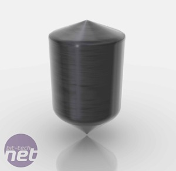

Pembuatan Chip CPU
Intel membantu kami menempatkan panduan ini bersama-sama, dan sebagai hasilnya berfokus pada implementasi dari 32nm proses manufaktur High-K. produsen lain, seperti Global Foundries atau TSMC, menggunakan metode agak berbeda untuk menghasilkan chip-nya.
Kiri: Yang punya jalan panjang untuk pergi dari sini. Kanan: Sangat penting untuk membuat silikon ingot tunggal, bergabung-kurang piece.
Hebatnya, setelah oksigen, silikon adalah unsur yang paling berlimpah di kerak bumi. Ini bukan hanya tergeletak di benjolan elektronik kelas meskipun, dan perlu diekstrak dari pasir, di mana ia berada dalam bentuk silikon dioksida (SiO2).
Setelah silikon telah dimurnikan ke tingkat yang diperlukan (sesuatu di wilayah 99,9999999 persen murni), itu dibentuk menjadi 100kg ingot bersebelahan tunggal silikon. ingot kemudian dapat diiris ke disk individu tebal 1mm, yang disebut wafer, yang harus dikenali dengan kebanyakan pecandu teknologi.

Kiri: ingot ini berat sampai 100kg dan sekitar 12 inci diameter. Kanan: wafer harus tepat ketebalan yang tepat.
Wafer kemudian dipoles untuk cermin selesai sempurna siap untuk tahap berikutnya dari proses. Menariknya, produsen CPU biasanya tidak bertanggung jawab untuk ini tahap awal, bukannya membeli siap potong dan wafer dipoles dari produsen silikon pihak ketiga.
Kiri: Luka dan wafer silikon dipoles semua siap untuk dibuat menjadi beberapa ratus prosesor. Kanan: Anda hanya dapat melihat kemilau berpola dari foto menolak.
Sekarang bisnis yang kompleks menciptakan sesuatu yang mampu bermain Crysis dan rendering video yang dimulai dengan sungguh-sungguh. wafer yang ditutupi lapisan strategis derai foto menolak, yang bertindak seperti stensil ketika wafer dibombardir dengan sinar bertenaga tinggi atom bermuatan yang disebut ion.
kiri: Beam me up Scotty ... atau hanya menanamkan saya dengan triliunan ion bermuatan. Kanan: Konduktivitas listrik dari bagian-bagian tertentu dari wafer sekarang telah berubah.
Ion-ion menanamkan diri di bagian terbuka dari silikon, dalam proses yang disebut implantasi ion atau doping, yang mengarah ke perubahan dalam sifat konduktif bagian dari wafer. foto resist kemudian dihapus, meninggalkan pola kompleks konduktif dan non jejak konduktif pada wafer silikon.
Tahap selanjutnya adalah menambahkan High-K bahan dielektrik, yang melakukan peran yang sama sebagai insulator silikon dioksida tradisional. Ini sebenarnya bahan High-K ini khusus yang telah membantu Intel untuk melaksanakan transisi dari 65nm ke 45nm dan sekarang untuk proses produksi 32nm, karena itu unggul isolator tradisional di sejumlah cara yang akan disorot kemudian. Jika kita fokus pada produksi chip dibuat pada proses produksi yang kurang maju, maka bahan silikon dioksida yang lebih tradisional akan digunakan pada saat ini.
Kiri: Lembaran kuning mewakili lapisan High-K dielektrik ... jelas. Kanan: dielectric ditambahkan dalam lapisan hanya satu atom tebal untuk memberikan selesai sempurna.
dielectric ditambahkan dalam lapisan mikroskopis, benar-benar hanya sebuah atom tebal pada suatu waktu. Menambahkan dielektrik dengan cara ini memungkinkan akurasi yang lebih besar dan mengurangi potensi kebocoran listrik, yang menyebabkan prosesor yang lebih hemat energi dalam jangka panjang.
Bahan High-K juga diterapkan di lapisan tebal daripada dengan isolator tradisional, tetapi tetap mempertahankan sifat kapasitif sama dengan bahan-bahan ini. Hal ini memungkinkan kebocoran listrik harus dikurangi (karena bahan lebih tebal) tanpa mempengaruhi kinerja kapasitif, properti yang merupakan kunci untuk membuat manufaktur di ini ukuran kecil mungkin.
Kiri: wafer tersebut berputar untuk mendistribusikan foto menolak merata. Kanan: Topeng digunakan dalam litografi foto yang sangat rinci.
lapisan lain foto resist kemudian ditambahkan. wafer tersebut kemudian terkena pola tertentu dari sinar ultra violet yang ternyata bagian dari foto yang menolak larut, dalam proses yang disebut litografi foto.
Pola cahaya dicapai dengan menggunakan halus rinci 'topeng', yang bertindak seperti stensil. topeng ini, rinci seperti mereka, masih perlu difokuskan ke tingkat mikroskopis yang CPU saat ini bekerja di. Hal ini dilakukan dengan melewatkan cahaya bertopeng melalui lensa, yang biasanya mengurangi ukuran gambar topeng oleh empat kali.
Kiri: Kami telah diperbesar bawah untuk melihat satu transistor sekarang. Garis gelap di tengah menunjukkan di mana topeng menghentikan sinar UV bereaksi dengan foto menolak. Kanan: foto UV-bereaksi menolak dihapus dengan pelarut lembut.
foto menolak terkena cahaya sekarang dapat dihapus dengan pelarut, meninggalkan pola tertentu dari foto tidak terpengaruh resist dibuat oleh topeng. foto ini menolak kemudian melindungi pola High-K dielektrik masih meliputi, sedangkan kelebihan materi Tinggi K lembut terukir pergi menggunakan bahan kimia.
Kiri: foto resist juga menolak bahan kimia etsa. Kanan: Strip kuning adalah dielectric High-K, dan hijau adalah silikon konduktif didoping
foto resist kemudian dihapus meninggalkan pola sangat rumit High-K dielektrik di atas silikon konduktif konduktif dan non.
wafer ini kemudian ditutupi lapisan dari bahan isolasi. Pada tahap ini transistor sebenarnya lengkap, tapi mereka benar-benar terisolasi dari satu sama lain. Untuk membuat sebuah chip yang berfungsi transistor harus dapat berbicara dengan mereka ratusan juta saudara, dan tahap berikutnya dalam proses - deposisi logam - memungkinkan ini. Awalnya tiga lubang yang tergores di titik-titik strategis di lapisan isolasi di atas masing-masing transistor. Seluruh wafer kemudian ditempatkan ke dalam larutan tembaga sulfat dan dilapisi.
Kiri: Lapisan merah adalah isolator baru ditambahkan, perhatikan tiga lubang kecil. Kanan: Electroplating, seperti di GCSE kimia
Elektroplating wafer CPU adalah persis proses yang sama banyak orang akan baik mencoba atau melihat dilakukan di sekolah di kelas kimia, dan melibatkan menempatkan benda bermuatan negatif (katoda) ke dalam larutan garam logam. Garam logam mengandung ion bermuatan positif yang tertarik ke katoda (dalam kasus ini, wafer) dan 'mengurangi' sendiri pada katoda membentuk bahkan lapisan logam di atas objek.
Hal ini membuat seluruh wafer ditutupi kemilau tipis tembaga murni yang sekarang perlu dihapus. Hal ini dilakukan melalui proses polishing halus yang poles wafer kembali ke lapisan isolasi, meninggalkan tembaga masih disimpan di tiga lubang terukir di awal proses.
Kiri: Electroplating memberikan finish halus sempurna. Kanan: Transistor dipoles kembali ke isolator. Perhatikan tiga lubang kini diisi dengan tembaga.
Transistor sekarang prima dengan kontak logam dan hanya perlu kabel up; sayangnya kabel sampai ratusan juta transistor mikroskopis adalah tugas bendingly kompleks. Hal ini juga sangat penting, karena ini adalah di mana mahkota kinerja dapat menang atau kalah - tahap sampai saat ini adalah proses standar untuk membuat IC dan transistor.
Ini adalah kerumitan dan kompleksitas dari interkoneksi transistor dari chip yang akhirnya akan menentukan kinerja dan efisiensi individu, sehingga mendapatkan tahap ini yang benar adalah sangat penting.
Kiri: ini menunjukkan interkoneksi antara enam transistor - rumit adalah meremehkan. Kanan: kontrol kualitas Basic juga dilakukan pada saat ini
Interkoneksi yang dibangun di tingkat dengan chip modern, dengan sampai 30 tingkat dari interkoneksi diatur di atas permukaan chip secara bewilderingly kompleks. Memang, jika Anda begitu cenderung, Anda bisa tuas dari heatspreader pada CPU Anda dan lihatlah chip di bawah mikroskop. Setelah melakukan ini, Anda akan melihat apa yang tampak seperti sebuah chip datar dan halus pada kenyataannya merupakan objek 3d yang kompleks, dengan Intel menggambarkan jaringan yang rumit dari interkoneksi sirkuit sebagai 'tampak seperti futuristik, jalan raya berlapis-lapis'.
Pada titik ini prosesor yang lengkap dan semua yang tersisa adalah untuk menguji, paket dan kecepatan bin chip. Pengujian dilakukan pada tingkat dasar sementara meninggal masih dalam bentuk wafer, dengan algoritma tes sederhana yang diberikan ke chip. Setiap chip keluaran jawaban yang salah ditandai dan dibuang setelah wafer telah hati-hati dipotong menjadi CPU individu meninggal.
Kiri: Kita hampir yakin mereka tidak menggunakan gergaji melingkar untuk ini ... Kanan: die The selesai dan dipotong - dalam hal ini CPU Clarkfield dan GPU ditakdirkan untuk Core i5
dies sendiri kemudian siap untuk dikemas ke dalam apa yang banyak orang akan mengakui sebagai CPU. die duduk pada substrat (atau PCB) dalam soket yang menghubungkan ke pin atau titik kontak dari kemasannya. Chip ini kemudian terpaku di tempat, dan heat spreader diletakkan di atas itu untuk membantu secara efektif melakukan panas dari chip.
Kiri: Sebuah socket halus pada substrat dari paket CPU menghubungkan die ke pin atau bantalan di bagian bawah. Kanan: Kecepatan binning - X-Factor dari dunia CPU.
Setelah chip telah dikemas mereka pergi melalui pengujian kelas atau proses 'Binning' dimana karakteristik termal dan frekuensi mereka akan dianalisis. Anggap saja sebagai proses audisi, dengan setiap chip berharap mampu mendapatkan peran di ujung atas dari kisaran, berjalan pada frekuensi tertinggi. Sayangnya, karena variasi kecil dalam proses produksi, beberapa chip tidak dapat berjalan dengan baik dan harus puas dengan yang binned sebagai chip kisaran yang lebih rendah - setidaknya mereka menghindari wawancara cringey dengan Ant dan Desember
Setelah chip binned dan dikemas mereka dapat mengirimkan ke pembangun sistem di nampan dari 1.000, atau pengecer online dalam kemasan yang lebih mencolok ritel mereka, siap untuk dibeli dan dimasukkan melalui langkah mereka dengan masyarakat.
Kiri: CPU dikirim ke pembangun sistem di nampan. Kanan: Konsumen mendapatkan kemasan mewah.
CPU beruntung mungkin berakhir dengan rendering pemandangan indah dari game terbaru dan video, atau bahkan membantu menciptakan CGI Blockbuster berikutnya. Namun untuk CPU yang rendah akan berakhir disiksa dengan dipaksa dalam aktivitas yang melebihi kemampuannya.
Sumber : http://www.bit-tech.net/hardware/cpus/2010/06/10/how-to-make-a-cpu-from-sand-to-shelf/1